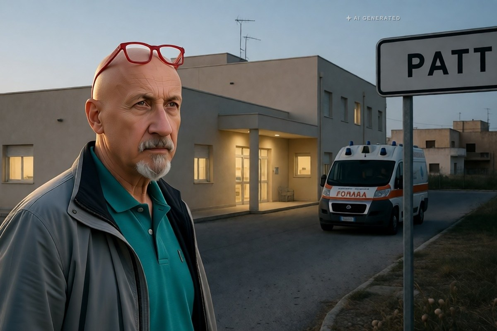

Cronaca · 6 novembre 2026
Patti, operatrice sospesa sei mesi: usò il bancomat di un'anziana

Il gip del tribunale di Patti dispone la sospensione dal servizio per un'operatrice socio sanitaria dell'ospedale Barone Romeo. Secondo i carabinieri, con la carta di una paziente in geriatria furono spesi quasi 1.200 euro.
di Franco Zanghì
Il giudice per le indagini preliminari del tribunale di Patti ha disposto la sospensione dal servizio per sei mesi di un'operatrice socio sanitaria in forza all'ospedale Barone Romeo. L'accusa è di indebito utilizzo di strumenti di pagamento: secondo i carabinieri avrebbe usato la carta di debito di un'anziana ricoverata nel reparto di geriatria. Per l'indagata vale la presunzione d'innocenza fino alla sentenza definitiva.
I fatti risalgono alla fine di agosto 2025. La paziente era ricoverata in condizioni gravi e non era in grado di controllare i propri effetti personali; il portafogli, con la carta dentro, era custodito nell'armadietto della stanza.
Come si è arrivati alla misura
Fra il 25 e il 27 agosto, secondo la ricostruzione dei carabinieri della stazione di Patti, con quella carta sarebbero stati effettuati prelievi agli sportelli e acquisti in alcuni negozi, per un totale di quasi 1.200 euro. La denuncia è stata presentata da una nipote della donna.
I militari hanno incrociato i movimenti del conto con le immagini delle telecamere di banche e negozi: in quei filmati, secondo l'accusa, compare l'operatrice che lavorava nel reparto. Per il giudice esiste il pericolo concreto di reiterazione del reato, proprio in ragione del lavoro svolto, e da qui la sospensione.
Che cos'è la sospensione dal servizio
La sospensione dall'esercizio di un pubblico servizio è una misura cautelare interdittiva: non è una sanzione disciplinare e non è una pena, ma un provvedimento che il giudice adotta quando ritiene che continuare a svolgere quel lavoro agevolerebbe la ripetizione del reato. Dura un tempo determinato, in questo caso sei mesi, e può essere impugnata davanti al tribunale del riesame.
È lo stesso strumento usato, nei mesi scorsi, in altre vicende siciliane che hanno riguardato il personale sanitario, e si applica a prescindere dal livello di inquadramento: conta il contatto con le persone assistite, non il grado.
Quello che resta
La misura è cautelare e interviene nella fase delle indagini: non stabilisce una responsabilità, la congela in attesa del processo. È una distinzione che vale la pena ricordare ogni volta, perché una sospensione dal servizio viene letta facilmente come una condanna anticipata, e non lo è.
Chi lavora in corsia fa un mestiere duro e spesso pagato poco, e la grande maggioranza lo fa con onestà. Proprio per questo una vicenda così pesa due volte: perché riguarda una persona che non era in condizione di difendersi, e perché getta un'ombra su chi, in quell'ospedale, si prende cura degli anziani ogni giorno.
Fonti
- MessinaToday, «Sottrae la carta di credito a una paziente ricoverata e preleva oltre mille euro», 6 novembre 2026
- MeridioNews, «Operatrice socio-sanitaria usa la carta di un'anziana in ospedale», 6 novembre 2026
- Sicilianews24, «Patti, ruba il bancomat a un'anziana ricoverata: operatrice sospesa per sei mesi», 6 novembre 2026
- AMnotizie, «Ospedale Barone Romeo di Patti: sospesa per sei mesi una oss», 6 novembre 2026
- 98zero, «Patti, usa la carta di un'anziana ricoverata: operatrice sanitaria sospesa», 6 novembre 2026
Il nome dell'indagata non viene pubblicato: si tratta di una misura cautelare in fase di indagine, non di una condanna. L'importo di quasi 1.200 euro è quello indicato dalle cronache locali sulla base degli atti dei carabinieri.